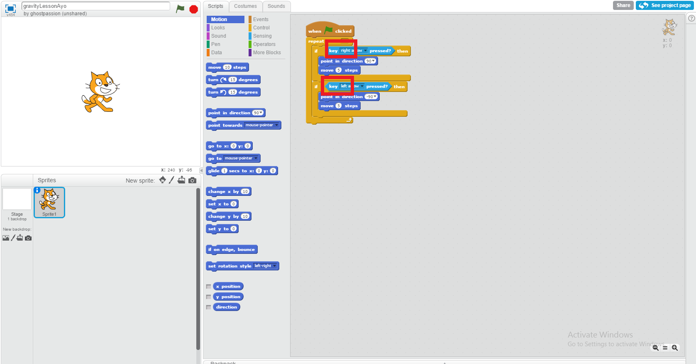
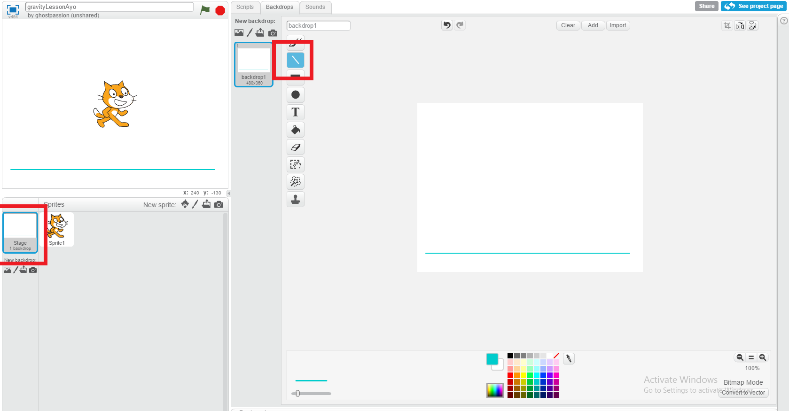
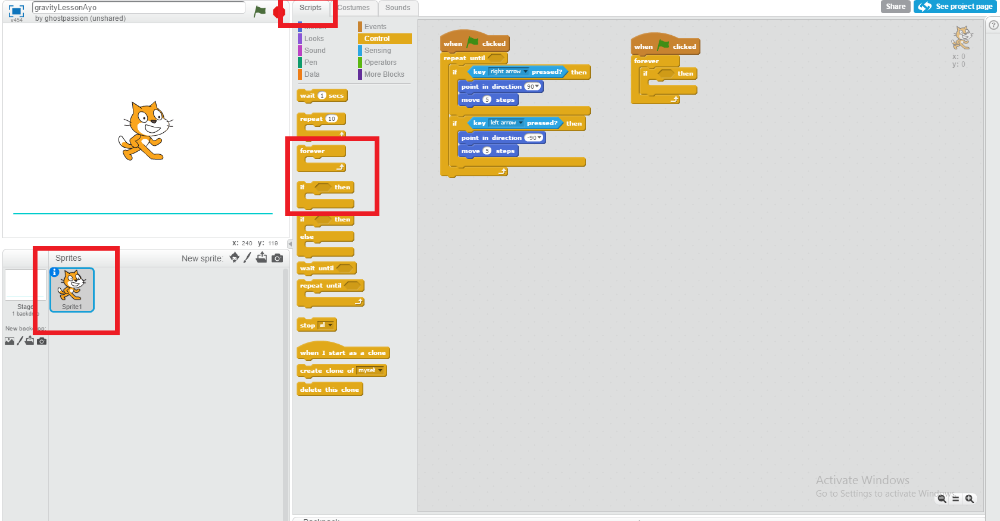
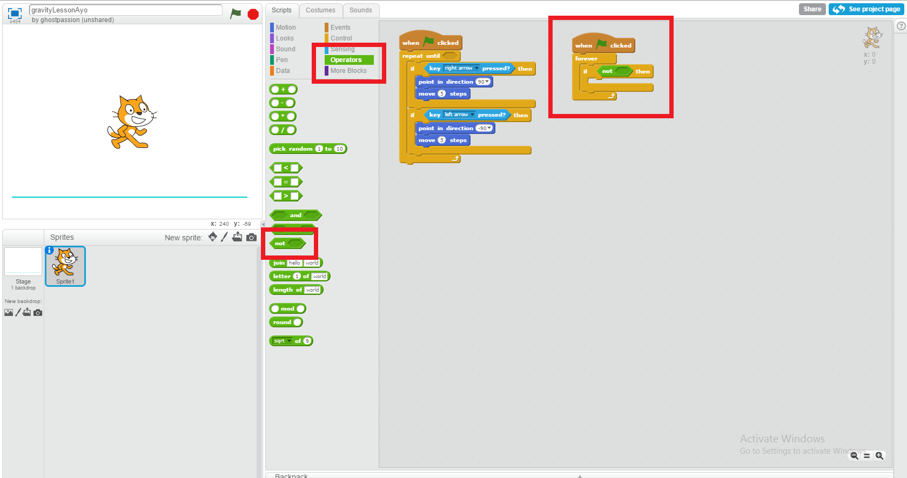
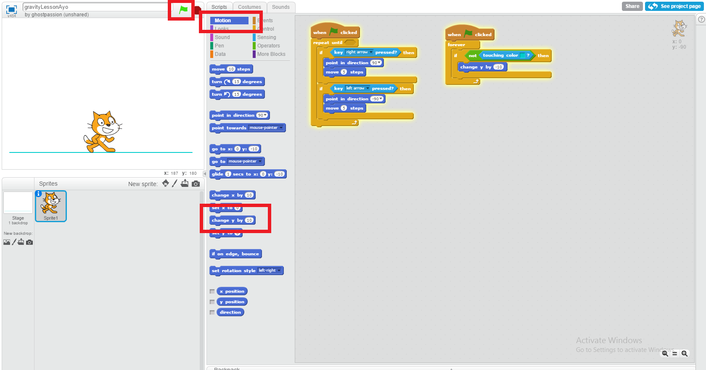
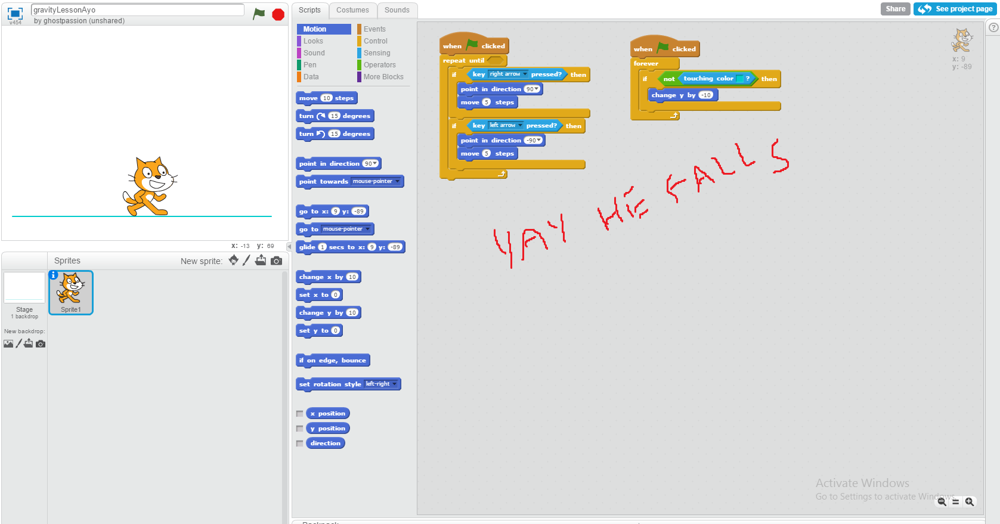
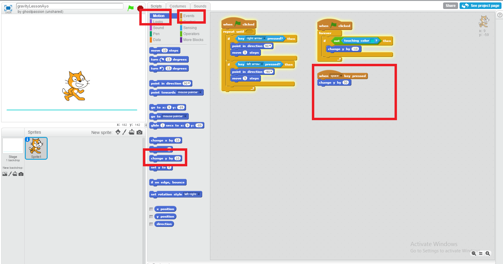
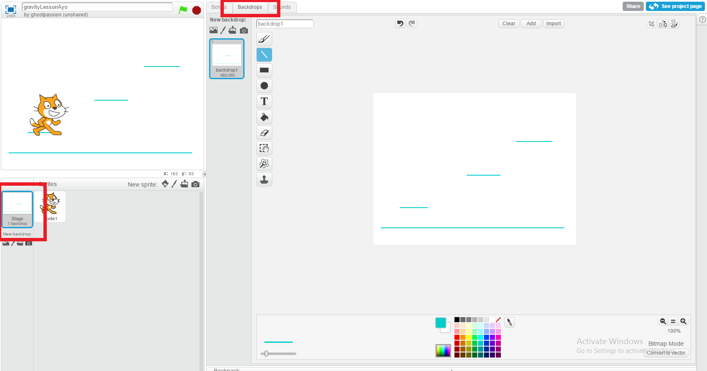
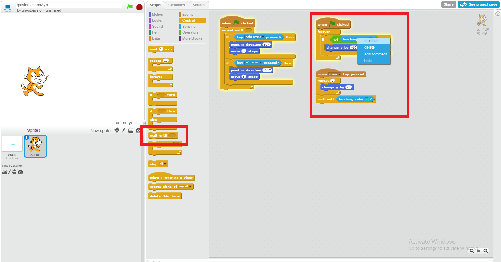

Portland Kids Coding
REQUIRES TESTING PASSION Gravity: Simple

First, we're going to use the Complex Arrow Key Movement Lesson
to make the cat move and then remove the up and down code so he can't fly, just move left and right along the floor.

Now, click on the background sprite and pick the color you want the ground to be. I want blue.
Use the line tool to click and drag a floor on your background.

Click back to the cat and his scripts.
In events, drag in a [when green flag clicked] and fill it with a [forever] and an [if].
In events, drag in a [when green flag clicked] and fill it with a [forever] and an [if].

In operators, find the [not] block. We are going to tell the cat to move down if he's
not touching the blue floor. Put the [not] block in the [if] block.

In sensing, find the [touching color ()] block. Drag it into the [not].
Click on the color square and then click on your line to set the color.
Click on the color square and then click on your line to set the color.

To make the cat fall if he's not touching that color, we'll get the [change y by (10)]
block from movement. Running your code (green flag) now will show the cat rising up to the sky, desperately
searching for your ground color. Change the (10) to a (-10) to make him fall instead.

If you run your code (click the green flag!) and drag the cat up and let go,
you'll see that he falls until he hits the "ground" in your game. Congratulations: you coded gravity.

But, gravity isn't very interesting unless you can jump. So drag a [when (space) key
pressed] block in from events to start coding in jumping.
Get another [change y by (10)] block from movement since the last time we used it it made the cat go up like an endless jump. Change the (10) to (50) and run your code. Test it by pressing the space bar!
Get another [change y by (10)] block from movement since the last time we used it it made the cat go up like an endless jump. Change the (10) to (50) and run your code. Test it by pressing the space bar!

It's a solid jump at the moment, but I want it to look cooler. I'll change the [change
y by (50)] to a (20) and put a [repeat (10)] block around it instead. Make it a [repeat (5)].
Now when I test it the jump looks smoother.
Now when I test it the jump looks smoother.

To get you started on whatever gravity game you're planning, draw some more lines in
your ground color on your background. Once you get the spacing right and mess with your jump height, the cat can
jump around!

Optional step: If you want to make it impossible to jump infinitely, we can add code to
make the player wait until they've touched the ground to jump a second time.
Simply get a [wait until] block from control and put it at the bottom of your space bar jumping code. Then right click on your [touching color (blue)] block and duplicate it to fill the [wait until]. Now the cat is forced to wait until he touches down to leap again.
Simply get a [wait until] block from control and put it at the bottom of your space bar jumping code. Then right click on your [touching color (blue)] block and duplicate it to fill the [wait until]. Now the cat is forced to wait until he touches down to leap again.